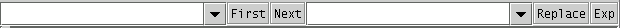
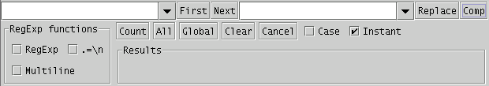

Searching for and replacing text is such a constant activity in Web development, and in general programming, that Arachnophilia has a special bar dedicated to this purpose. It looks like this:

But, since we're going to be looking at all the search & replace features, click the button marked "Exp" at the right. You will see the expanded panel display:

The rules are simple:
- Searching:
- If you type into the left-hand text window (the search window) and press "First," the first example of what you type will be sought in the presently displayed document.
- If "Instant" is selected, a search for the first match will be carried out as you type — on each keystroke.
- If you click "Next" (or press "Enter" while the editing cursor is in the search text window), the next match is found.
- You can scan the entire document for matches by pressing "Next" (or "Enter") again and again.
- Pressing the Enter key while typing into the search window is equivalent to pressing "Next." This makes instant searches easy — just type until you like what you find, then press Enter to find the next case.
- Replacing:
- If you type some text into the right-hand text window (the replace window) and click "Replace," text that matches the search entry will be replaced by the replace entry, once.
- If you press "All," item (1) above will be carried out for all matching cases in the document that is on display, if there is no selection. Remember: nearly all Arachnophilia functions work on the slection if there is one, and on the entire document if there is no selecton. So remember not to select anything if you want to apply "All" to the entire document.
- If you press "Global," item (2) above will be carried out for all the documents you have open.
- Pressing the toolbar button marked or typing Ctrl-Z will undo the most recent replacement (or, if "All" had been clicked, all of them).
The power of "All" and "Global" obviously means you will want to be careful — before pressing "All" or "Global," first satisfy yourself that you are searching for and replacing the desired text.
Both the search and replace windows remember what you have typed before, so if you need to repeat a search, you can get back your prior entry by opening the drop-down list and selecting instead of retyping it.
More rules and behaviors:
- If you press "Count," the number of occurrences of the search text is counted in the displayed document (or selection).
- If you select "Case," the search become case-sensitive (it is not case-sensitive by default).
- An advanced feature — if you want to insert a macro name into either the search or replace text windows, simply press the right mouse button and choose the desired macro name. The macro will be processed when the search is carried out.
Escape characters
The usual escape characters work for both normal and regular expression entries: \n = linefeed, \t = tab, and so forth. These escape characters work for both the search and replace fields. And, because "\" is used for the escape prefix, if you want to search for "\", enter it as "\\".
Long search entries
Avoid entering more than a few words into the main seach and replace windows. For longer search or replace fields, first write a macro to contain the text, then refer to the macro by name in the search and replace fields. To get the macro name, simply right-click the desired field and choose the name from the list that will appear.
If you enter too much text into a search or replace field, this may produce an unusable dropdown list. If this happens, you may need to remove the entry by editing the configuration file located at:
C:UsersBill/.Arachnophilia/Arach.ini
And finally, a note about Regular Expressions. Selecting "RegExp" in the "RegExp Functions" window enables the regular expression parser, a very powerful tool that is rather advanced, and one that I won't be covering in detail here. If you want to learn how to use regular expressions, the Internet has a number of pages dedicated to this topic. A search engine like
www.google.com
will produce a list of them.
One more thing.
An innocent-looking, poorly-written regular expression can lock up your program and your computer.
Always save important documents before experimenting with regular expressions, and always save successful regular expression patterns in macros instead of trying to type them in from memory. And avoid using the "Instant" mode with regular expressions — a partially entered regular expression may have unexpected effects.